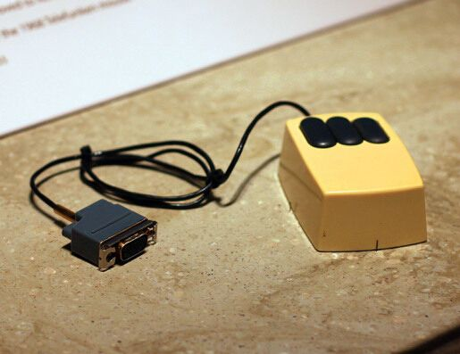
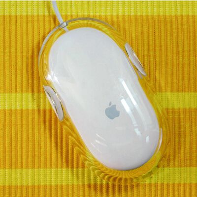
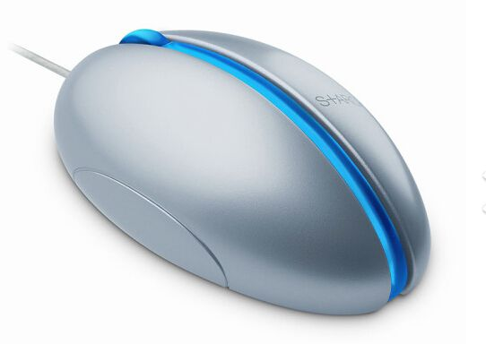
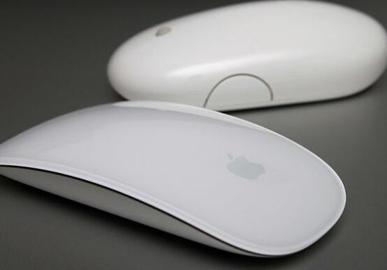
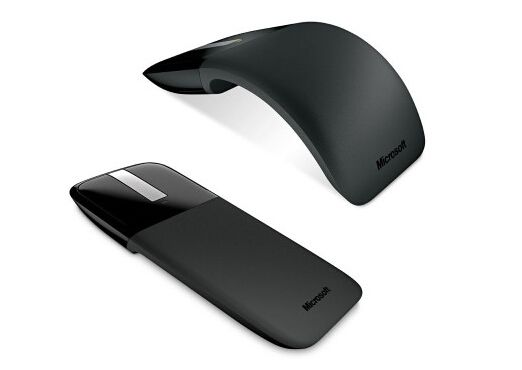

鼠标自60年代中期诞生以来，经历了无数次的变化，这些变化使得它使用起来更舒适、更符合人体工程学、也更方便人们携带。本文会带你重温鼠标从简陋到如今未来感十足的历程。
房子中的鼠标

在1968年的Mother of All Demos(展示之母)上，来自斯坦福研究院(SRI)的Douglas Engelbart向全世界展示了多种计算机科技，及在接口方面的突破。在众多的展品中就有完成于1964年的鼠标原型。在当时，人们习惯的将鼠标称为“显示系统的X-Y位置指示器”。这个鼠标原型有着两个轮子，以及木头的外壳，鼠标可以在水平和垂直方向运动。SRI提交的这项专利在1970年获得通过，并最终授权给苹果、施乐等公司。
左右转动的鼠标

在SRI研发鼠标的同期，德国的Telefunken公司也在进行着类似的项目。他们的设计没有轮子和X-Y坐标系，看上去是个球形结构(像之后的机械鼠)。滚动球的设计与SRI的模型有些类似，也是德国人自主研发的。
PARC(施乐帕克研究中心)

世界上最早的桌面电脑AITO是PARC在1973年研制并推向市场的，但是这些个人工作站并没有商业化，大多应用于施乐集团内部和大学校园，这些产品都拥有SRI研发的特别版输入接口。AITO的用户很快就被鼠标吸引了，并证实了鼠标的市场潜力。
没有滚球的鼠标

滚球结构的鼠标面临着容易堵塞灰尘和污物的问题。1981年，Steven Kirsch为鼠标开发了一款光学模型。同一年，PARC也研制出一个类似的版本。这些鼠标利用光线跟踪运动，不再需要滚球。不过想要它正常工作，人们需要配一个鼠标垫。
走进市场的鼠标

乔布斯在1979年参观PARC的时候第一次见到了鼠标，这令他激动万分。这次的经历启发他在1983年苹果推出的Lisa上配备了类似的设备。Lisa是最早的商用电脑。一款类似但具有棱角的鼠标被应用在苹果1984年发布的Macintosh上。
智能化、不需要鼠标垫的鼠标

鼠标面世的几年来，逐渐加入了滚轮。微软在1996年推出的智能鼠标就是滚轮鼠标的代表之一。1999年，微软用光学LED取代传统的滚球设计。当然，这个问题在1981年就被解决了，但是这次改进的光学鼠标不再需要鼠标垫了。
又有了球

轨迹球鼠标，通过滚动暴露在外面的球对屏幕上的光标进行控制的鼠标。这项技术可以追溯到上世纪50年代，当时是加拿大名为DATAR的军事项目。2000年，微软将这项技术与轨迹跟踪技术结合起来，用手指，或者单单拇指就能利用突出的、颜色亮丽的轨迹球进行精确定位。
苹果的Pro

苹果继续研发其自己的有线鼠标，但是其设计理念是化繁为简。1998年，该公司发布了第一款USB接口的鼠标iMac系列，但其圆形的设计让大多数用户不以为然甚至难以理解，因此该款鼠标获得了“冰球”的外号。2000年，苹果发布了Pro系列鼠标，这款鼠标装在透明的塑料中，用整体式取代可见的按钮。
S+ARCK

苹果并不是唯一一家靠设计来促进产品销售的。2004年，微软推出了其自主研发的基于S+ARCK的未来版光学鼠标。这款时髦的鼠标由Philippe Starck设计，是微软首次尝试将艺术元素融入到产品设计中。由于有对称的结构，这款鼠标同样适合左撇子们。
超出视觉范畴

多年来，索尼为其VAIO设计了一系列时尚而独特的有线鼠标，但很少有像2006年推出的Talk (VN-CX1)那么吸引眼球。这款支持USB的鼠标能在你需要的时候变为一部电话。它将经典的翻盖式手机与便携式鼠标结合在一起。在聊天的时候，滚轮还能作为调节音量的控制器。
鼠标的发展趋势
便携式电脑的多样化促使鼠标制造商们探寻缩小设备的新途径。早在1984年，罗技就率先研发了无线鼠标。2005年Newton Peripherals 发布了超薄设计的 MoGo蓝牙鼠标。不用鼠标的时候，它可以插在电脑的卡槽中进行充电。
不可思议

苹果改进其Pro系列鼠标，并在2005年推出了一款支持多方向滚动球的版本，这款鼠标的两个按键非常灵敏，其侧键还支持编程。2009年推出的Magic Mouse对其进行了进一步的简化，光滑的顶部是一个手势输入设备，用户可以在鼠标表面的任何位置进行滚动和点击。
易弯曲型

微软在2010年再次推出了新产品：易弯曲的Arc鼠标。这款鼠标在旅行或闲置的时候能够放平整，当你要使用的时候又能弯曲成适合你手掌的形状。它的前面有灵敏的触摸滚动条以及两个按钮，其余部分都能够弯曲。它的蓝光技术宣称能在粗糙的木头表面使用，甚至在地毯上使用。
工业设计

2012年宝马和Thermaltake合作之后，鼠标的设计飞速发展。他们研发出的10 M鼠标是一件超级工业产品，这款鼠标支持角度调节，还配有通风的掌托、定制按钮以及铝制的底座。
有家的鼠标
撇开设计不说，每个鼠标的使用应该是舒适的。基于这点，日本的玩具制造商Thanko在2010年推出了这款带加热型鼠标垫的鼠标，能有效抵御寒冷，让你的手指保持温暖和灵活。
转载自：http://www.leiphone.com/news/201412/VMCt6DkAn5bpts8y.html